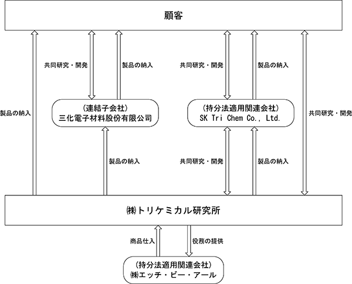

(注) １ 従業員数は、就業人員であり従業員数欄の〔外書〕は、臨時従業員の年間平均雇用人員であります。
２ 潜在株式調整後１株当たり当期純利益については、潜在株式が存在しないため記載しておりません。
３ 当社は、2021年２月１日付で普通株式１株につき４株の割合で株式分割を行いました。これに伴い、第42期の期首に当該株式分割が行われたと仮定して、１株当たり純資産額及び１株当たり当期純利益を算定しております。
(注）１ 潜在株式調整後１株当たり当期純利益については、潜在株式が存在しないため記載しておりません。
２ 従業員数は、就業人員であり従業員数欄の〔外書〕は、臨時従業員の年間平均雇用人員であります。
３ 最高株価及び最低株価は、2022年４月３日以前は東京証券取引所市場第一部におけるものであり、2022年４月４日以降は東京証券取引所プライム市場におけるものであります。なお、第43期の株価については株式分割(2021年２月１日付で１株を４株とする)による権利落ち後の最高株価及び最低株価を示しており、株式分割前の最高株価及び最低株価を括弧内に記載しております。
４ 当社は、2021年２月１日付で普通株式１株につき４株の割合で株式分割を行いました。これに伴い、第42期の期首に当該株式分割が行われたと仮定して、１株当たり純資産額及び１株当たり当期純利益を算定しております。
５ 第45期の経常利益及び当期純利益が前期実績より大幅に上回った理由は、当社の持分法適用関連会社であるSK Tri Chem Co., Ltd.より受け取った配当金が増加したこと等によるものであります。
当社グループの事業は、半導体等製造用高純度化学化合物事業並びにこれらの付帯業務の単一セグメントであります。
当社グループは、当社、連結子会社（三化電子材料股份有限公司）、持分法適用関連会社（SK Tri Chem Co., Ltd.及び㈱エッチ・ビー・アール）の４社で構成されております。
連結子会社三化電子材料股份有限公司は、台湾での高純度化学化合物の開発・製造・販売を行うことを目的として設立された会社であります。
関連会社SK Tri Chem Co., Ltd.はSK Materials Co., Ltd.(現SK Inc.)との合弁で設立された会社であり、韓国における高純度化学薬品の開発・製造・販売を行っております。
関連会社㈱エッチ・ビー・アールはテイサン㈱（現日本エア・リキード(同)）との合弁で設立された会社であり、当社グループの主力製品であります臭化水素の製造・販売を行っております。
当社と連結子会社、及び関連会社２社は相互に連携を保ちながら、主として半導体メーカー向けの高純度化学薬品の開発・製造・販売を行っております。
半導体デバイス製造においては、シリコンのウェハ(注１)上に複雑な電子回路を構成するため、多様な工程を経て作られております。この工程はウェハプロセスと呼ばれておりますが、その中の様々な場面で、化学反応を利用した加工がなされており、当社グループの製品は主にウェハの表面上に薄膜を化学反応を用いて堆積させる「CVD」、薄膜の不必要な部分を腐食させて削り取る「エッチング」、ウェハ上にトランジスタ(注２)やダイオード(注３)等を作るためにウェハの内部に不純物を注入させる「拡散」といった多岐にわたる工程において用いられております。
また、これらに供される材料は、半導体デバイスの微細化に伴い、製造プロセス変更や材料の持つ特性の限界、化学物質を取り巻く法規制の強化等の要因により、それまで使用されていた材料から新しい材料への変遷が行われることもあります。当社グループは、この材料変更の要求に対し、材料工学・応用化学の観点から常に新しい材料の開発・提案を行い新材料の供給を行っております。
設立当初は光ファイバー製造に供される高純度材料の供給を行うことで成長を遂げてまいりましたが、現在では、それに加えて同様な材料を使用し、ニーズの変化が常に起こる半導体製造用材料や、デバイスの原理的に半導体と共通点の多い太陽電池製造用材料の供給を行っております。また、高純度材料や新規化学材料の試作依頼など開発に供される材料の開発・販売も同様に事業の一部となっております。
(注)１：ICチップの製造に使われる半導体でできた薄い基板。シリコン製のものが多く、これを特に「シリコンウェハ」と呼びます。
２：増幅機能を持った半導体素子であります。
３：片方向にのみ電流を流す性質を持った半導体素子であります。
事業系統図は、次のとおりであります。

製品事業
当社グループが、開発・製造・販売している主な半導体・太陽電池向け製品は、主に以下の３種類であり、また、製品製造・開発の過程において、当社グループの得意とする以下の４つの作業を付加することにより製品の高付加価値化を図り、他社との差別化を図ります。
＜製品種類＞
① CVD材料
② ドライエッチング材料
③ 拡散材料
＜付加作業の種類＞
① 化学薬品用容器の設計販売（化学関連法規等をクリアーした化学薬品輸送用タンクの設計及び販売）
② 化学薬品の受託合成（新規薬品の受託合成）
③ 受託実験（共同開発高純度化学薬品の開発並びに薬品を用いたCVDに関わる受託実験）
④ その他付帯サービス（化学薬品の物性調査や分析等のサービス）
①CVD材料
CVD（Chemical Vapor Deposition:化学気相成長）法とは、化学材料の蒸気を熱等により分解しウェハ上に堆積させる技術であり、CVD材料とはその際に用いられる化学材料を指します。堆積させる薄い膜は絶縁膜や金属・導体膜・半導体膜であり、使用される材料は多岐にわたっております。
また、半導体の微細化・高性能化を進めるために、従来の製法・材料では解決できない電気的な問題を解決するための誘電率の低い膜が得られる(low－k)材料や逆に誘電率の高い膜が得られる(high－k)材料・物理的な問題を解決するための金属窒化膜材料等といった新たなニーズに対応するための材料をいち早く提案し、安定供給するのが当社グループの特長であります。
②ドライエッチング材料
主に腐食による化学反応により、CVD法で堆積させた膜等の不要な部分を削り取り、ウェハ表面を凹凸に加工する技術であります。このプロセスに供される材料は、従前は特定フロン(注)に代表される材料を使用しておりましたが、環境問題や半導体の微細化により変わりつつあります。微細化が進むとCVD法等で使用される薄膜の材料も変更されることから、ドライエッチングに使用される化学材料も変更されます。当社グループの主力製品の１つである臭化水素（化学式：HBr）は環境問題・微細化といった問題をクリアーする材料であり、その需要は増大しております。
(注)：オゾン層保護のため国際条約により規制の対象となっているフロン。
③拡散材料
ウェハ上等にトランジスタを形成する際、不純物を注入する技術があります。イオン打ち込み法(注１)と熱拡散法(注２)の２種類がありますが、いずれも不純物を注入するということでは同様であります。
ここで使用される材料は、周期律表のⅣ族(注３)元素であるシリコンの持つ性質を変えることが求められるため、性質の異なる不純物である必要があります。具体的にひとつはⅢ族(注３)の元素であるホウ素・ガリウム・インジウム等で、もうひとつはⅤ族(注３)の元素であるリン・ヒ素・アンチモン等であります。
また、光ファイバーでも同様に光の拡散を制御する目的でゲルマニウムに代表される不純物を使用しております。
当社グループでは、これらに関わる材料を多様にラインナップするとともに、材料の性質や顧客の細かな要求に対応した容器に封入し出荷しております。また、既存製品の単なる販売にとどまらず、新規化学薬品の受託合成や、当社グループの製品を顧客が実際に使用する条件下で性質・性能等の評価を行う各種受託実験も行っており、これも当社グループの大きな特長であります。
(注)１：原子をイオン化して加速し、固体中に打ち込む方法。
２：熱的な方法で原子を固体中に注入する方法。
３：元素の周期律表の縦列に並ぶものは概ね性質が類似しており、Ⅰ～Ⅷまでの族に分類されます。
(注）１ 特定子会社であります。
２ 三化電子材料股份有限公司については、売上高（連結会社相互間の内部売上高を除く）の連結売上高に占める割合が10％を超えております。
(1) 連結会社の状況
2024年１月31日現在
(注) １ 従業員数は就業人員であります。
２ 従業員数欄の〔外書〕は、臨時従業員の年間平均雇用人員であります。
３ 当社グループの事業は、半導体等製造用高純度化学化合物事業並びにこれらの付帯業務の単一セグメントであるため、セグメント別の従業員の記載を省略しております。
2024年１月31日現在
(注) １ 従業員数は就業人員であります。
２ 従業員数欄の〔外書〕は、臨時従業員の年間平均雇用人員であります。
３ 平均年間給与は、賞与及び基準外賃金を含んでおります。
４ 当社の事業は、半導体等製造用高純度化学化合物事業並びにこれらの付帯業務の単一セグメントであるため、セグメント別の従業員の記載を省略しております。
当社グループには労働組合はありません。
なお、労使関係については円滑な関係にあり、特記すべき事項はありません。
(4) 管理職に占める女性労働者の割合、男性労働者の育児休業取得率及び労働者の男女の賃金の差異
① 提出会社
(注) １ 「女性の職業生活における活躍の推進に関する法律」（平成27年法律第64号）の規定に基づき算出したものであります。
２ 「育児休業、介護休業等育児又は家族介護を行う労働者の福祉に関する法律」（平成３年法律第76号）の規定に基づき、「育児休業、介護休業等育児又は家族介護を行う労働者の福祉に関する法律施行規則」（平成３年労働省令第25号）第71条の４第１号における育児休業等の取得割合を算出したものであります。
② 連結子会社
連結子会社は、「女性の職業生活における活躍の推進に関する法律」（平成27年法律第64号）及び「育児休業、介護休業等育児又は家族介護を行う労働者の福祉に関する法律」（平成３年法律第76号）の規定による公表義務の対象でないため、記載を省略しております。